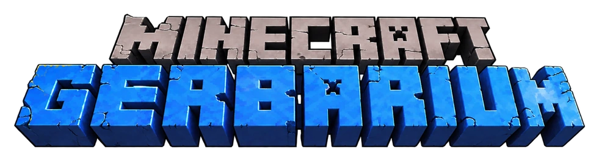
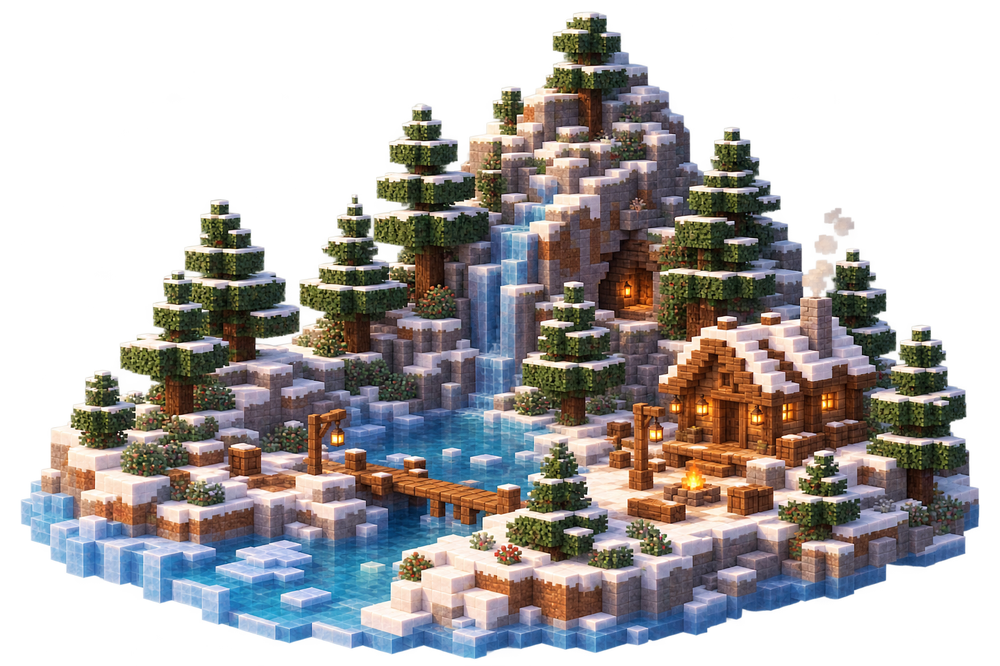
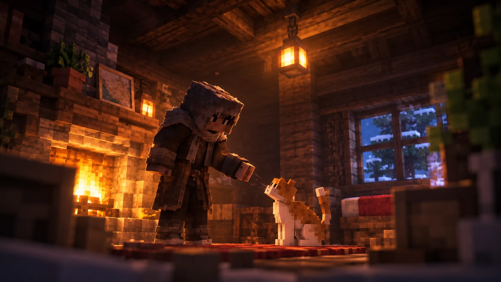
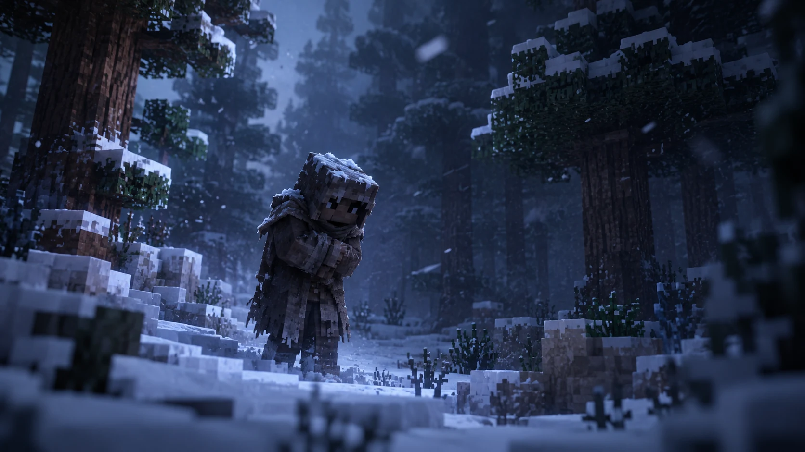

01
Переработанные механики
Базовые системы изменены и связаны в более глубокий игровой процесс — без ощущения набора случайных модификаций.
Новый опыт выживания

Не просто новый мир.
Пять слоёв. Одна новая реальность.О сервере
Gerbarium перерабатывает привычное выживание: от исследования островов до снаряжения и влияния климата.
1000+
Сервер для большого живого комьюнити.
Minecraft 1.20.1
01
Базовые системы изменены и связаны в более глубокий игровой процесс — без ощущения набора случайных модификаций.
02
Команда общается с игроками на всех этапах: от обсуждения идеи до тестирования и последующих обновлений.
03
Игровые возможности не продаются. Сильнейшим становятся не покупкой, а исследованием мира и освоением его систем.
Собственный лаунчер
Лаунчер собирает необходимое для игры в одном месте и освобождает от ручной сборки клиента.
Наведите или нажмите, чтобы перевернуть
Обсуждение
→Тестирование
→Обратная связь
→Обновление
Карта мира
Каждый остров — отдельный характер, свои ресурсы и собственные правила. Выберите, с какого начнётся ваша история.

Остров 01 / 04
Заснеженная тайга, ледяные пики и тёплый свет кузниц. Суровый край, где ремесло начинается с огня.
Особенность острова
МеталлургияСоздание снаряжения · механика сервера
Именно так снаряжение создаётся на сервере. Интерактив ниже повторяет реальный игровой процесс: пять этапов — от слитка до готового меча.
Выбран материал: сталь


01
02
03
Сервер открыт. Добро пожаловать в Gerbarium.
19 декабря 2026 · 18:00 · UTC+3